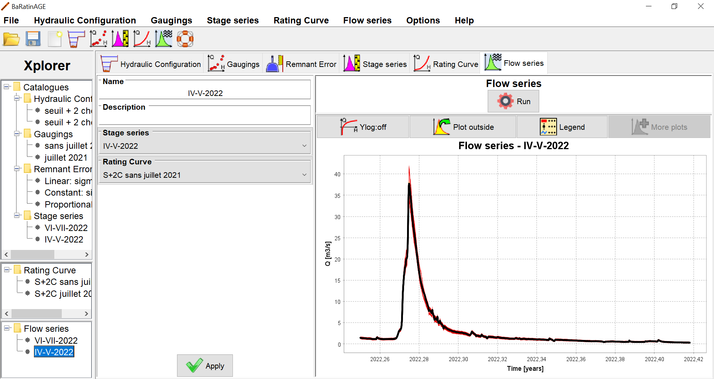
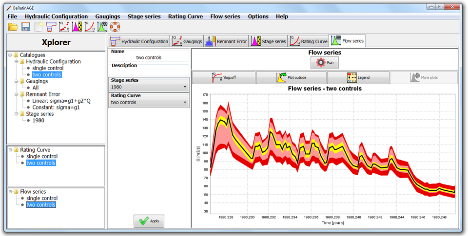

You can create a new flow series in several ways:
You will be asked to name this new flow series, and you can enter a description. To specify the properties of the flow series you have to select:
You are now ready to start the computation of the flow series, by clicking on the Run button. After the computation, the panel is updated as follows:

Note 1: The computing time for this step can be important, and it is mainly governed by the number of time steps contained in the stage series. As an order of magnitude, a computing time of about a minute is expected for a stage series containing 10,000 time steps. This is due to the method used by BaRatinAGE for estimating uncertainties. Indeed, to compute the uncertainty intervals around the flow series, several hundreds of flow series are actually computed by propagating both stage series uncertainties and the rating curve uncertainties (spaghetti approach). For more details on this computation, you can refer to this document.
Note 2: To save memory and computational time, by default streamflow ensembles are not saved. If you wish to save the streamflow ensembles, go to Options...Save Options, select "yes", apply and restart BaRatinAGE. From now on, the ensembles will be saved in the bar.zip file each time you compute a discharge series within BaRatinAGE. You'll find them in the subfolder "Hydrograph", with names like spagH.txt (uncertainty due to stage errors alone), spagHParam.txt (stage errors + uncertainty in rating curve parameters), spagTotal.txt (stage errors + uncertainty in rating curve parameters + remnant errors). Be careful though: the created files might be very large, which might slow down opening/saving of the bar.zip file.
By zooming in the graphic panel, several uncertainty intervals appear around the computed flow series, as shown below:

The elements of this chart should be interpreted like this: